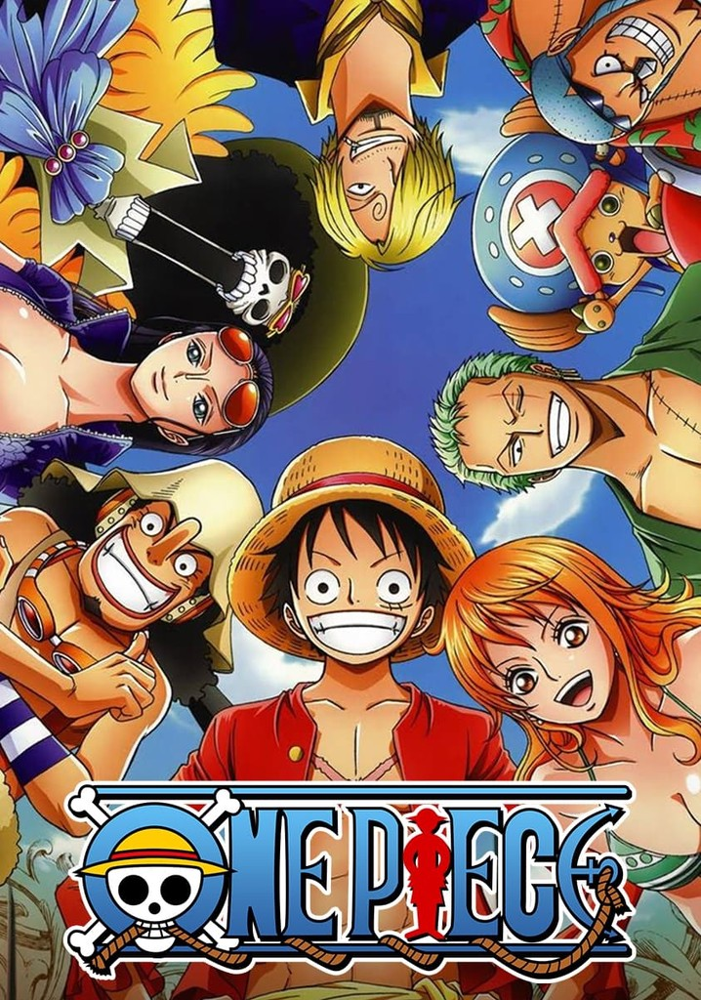

Es un anime de acción, el cuál además de ser el más visto en todo Japón es el más comercializado allá. Se encuentra en emisión desde 1997. Se trata de un grupo de piratas, los cuáles son dirigidos por su capitán Monkey D. Luffy en sus aventuras en búsqueda del más grande tesoro pirata, el One Piece. Además de ser un anime de acción, brinda un elemento cómico el cuál atrae a distintas audiencias.
Pros: Sencillo de ver debido al aspecto cómico, muy buen desarollo de personajes, muy buena historia, se encuentra en constante emisión.
Contras: Un anime bastante largo, con más de mil cápitulos.
Veredicto: Altamente recomendad a personas que hayan visto series largas (Sea anime o no), o personas que hayan visto anime anteriormente. No es recomendable para todos debido a la amplitud.
Logo de One Piece, anime más extenso. 1000+ cápitulos.
Full Metal Alchemist: Brotherhood
Es un absoluto clásico del anime. Se trata de dos hermanos que muy jóvenes pierden a su madre, y debido a que nunca han tenido una figura paterna que los acompañe empiezan a indagar en el mundo de la alquímia. Es un anime recomendable tanto para personas nuevas al mundo del anime debido a que es fácil de ver, corto y entretenido, como para personas experimentadas o que anteriormente hayan visto anime. Esto debido a que tiene un buen desarollo de personajes, y buena historia. Son al rededor de 64 episodios.
Pros: Sencillo de ver debido a la longitud, entretenido, buen desarollo de personajes.
Contras: Hay dos versiones por lo que puede ser confuso. La más fiel al manga es Brotherhood.
Veredicto: Altamente recomendada para cualquier tipo de persona, ya sea experta o nueva en el anime.
Una joya absoluta del anime.
Naruto & Naruto: Shippuden
Naruto y Naruto: Shippuden narran las hisotiras de Naruto Uzumaki, un ninja rebelde de la Áldea Oculta de la Hoja, mejor conocida como Konoha. Ambas historias narran la vida de nuestro personaje, Naruto se dedica al desarollo de Naruto como un ninja mediante sus aventuras en la Academia Ninja. Naruto: Shippuden es la continuación del mismo el cuál narra la vida de Naruto - Adolescente, y al final de la serie Naruto - Adulto. Es un anime con mucho desarrollo de personaje, y altamente recomendado para todos los tipos de consumidores de anime.
Pros: Buen desarrollo de personajes, separado en 2 para cada etapa.
Contras: Los dos juntos suman más de 700 episodios, y también posee muchos capítulos de relleno (Relleno es historia que no es canon, o que no afecta la historia principal, ni tampoco es parte de la misma)
Veredicto: Altamente recomendado, sin embargo recomiendo verlas en orden para concer más de los personajes.